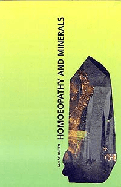

Homeopathy and Minerals
by Jan Scholten
Item # SCHMIN
Jan Scholten, MD
A modern, sophisticated review and integration of leading-edge knowledge about minerals used in homeopathy.
[From the back cover of the book]
Review of the book in SSC (the Dutch Homoeopathic Journal) by Frans Kusse:
“When I met the ideas of Jan Scholten for the first time in December 1992, I was surprised: enormous possibilities offered themselves. Now, some months later, having had experiences with these ‘new’ remedies, I can speak of a fundamental revolution in homeopathic thinking. The method Jan is offering in his book, seems too beautiful to be true, but it works! It is not easy to explain his method briefly, but I shall try to do so with an example from his college in February 1993.
A woman of 30 comes with a variety of complaints, such as allergy to the sun, pain in the right forehead, sciatica right, intestinal troubles, swollen and painful breasts before menses, and fatigue.
Mind: she needs attention, and compliments. ‘I didn’t dare to ask for attention and got irritated when my husband didn’t say anything of my work. My mother had too little time for us and I was the one who managed. I was a big girl’.
The theme of ‘attention’ is found in the Muriaticums, and the ‘timidity’ and ‘insecurity’ in the Calciums. The remedy: Calcium muriaticum (‘desire for attention, but not daring to ask for it’). The woman got cured after the remedy.
By analysing different minerals (Calcarea, Natrum, Phosphorus, Sulphur, Baryta etc.) and metals Jan has developed some key concepts for every element. In practice it is possible to make many combinations of these concepts and so find the remedy that fits the patient.
Try to imagine what it means once we have found the key concepts of every element of the periodic system …. Maybe that is what Kent felt when he said that all remedies could be found in one kingdom (mineral, plant or animal). The work of Ary Vrijlandt, who has studied the periodic system in his own way, can get its own place.
This book gives us the start. We practising homeopaths now have the job of verifying and expanding this information. A huge task and a fantastic challenge.”
“Jan Scholten offers us a fascinating way to review our Materia Medica”. (Lorraine Taylor, in Homeopathic Links, 1994, no 2)
“Jan Scholten has given a brilliant start for an enormous enrichment of our Materia Medica”. (Kees Dam, Simillima, 1993, no 2)
“This book is a must for all homoeopaths and a revelation for all patient that are interested in homoeopathy”. (Albert van Dinteren, in Homeopathie, 1994, no 2)
[From the New England Journal of Homeopathy Volume 3 Number 3 Summer 1994]
Homeopathy is undergoing a major rebirth, and, in that process, there is the coming to life of many new and wonderful resources for student and doctor a like. During the middle years of this century, there was a drought of new information in homeopathy, reflecting a long pause in our growth and development. Happily, we are beyond that now with a growing group of homeopaths who have extensive experience and are able to articulately share their knowledge and expertise. We will focus this column on those books which will thankfully be moving homeopathy into the twenty-first century.
Homeopathy and Minerals
by Jan Scholten
Published by Stichting Alonnissos, 1993
Reviewed by Paul Mittman, ND, DHANP
I recall a lecture by Paul Herscu on the geography of the homeopathic “world.” On this globe, remedies are represented by land masses which correspond in to the remedy’s relative in the materia medica. In other words, polycrests are depicted as large countries or islands, commonly prescribed remedies are smaller countries and rarely prescribed remedies are tiny islands either solitary or in an archipelago (if the remedy is often associated with other remedies of like – Erigeron with Sabina, ect.).
The most interesting feature of this analogy was the association of different mineral families with mountain ranges; the Kalis could be the Alps, the Calcareas as the Appalachians (rounder and more stable), the natrums solitary and unapproachable as the Himalayas.
In his book, Homeopathy and Minerals, Jan Scholten is our guide as we circle the globe climbing the mountain ranges of the homeopathic materia medica. Scholten goes beyond describing the cation ranges (the Calcareas, Magnesias, Natrums, Kalis, etc.) – he describes the anion minerals that combine to form remedy salts. More than just trekking through the ranges, we climb nearly every peak.
Group analysis
Scholten describes each mineral family using a process he calls “group analysis.” By extracting the symptoms common to all the remedies in a family, he composes themes that can then be applied to the various salts in that family. For example, conscientiousness, optimism, sense of duty, pragmatism, the middle of the night time aggravation are common to the remedies in the Kali family. A patient who strongly exhibits these characteristics would lead you to consider one of the Kali salts.
Group analysis is used to analyze the anions (carbonicas, muriaticas, phosphoricas and sulphuricas) as well. The carbonicas for example, have the themes; meaning, self worth, dignity, shyness and hard work.
Synthetic understanding.
Scholten takes this idea to its logical conclusion by synthesizing remedy pictures using the combined themes of the cation and the anion. It’s easy to see the “meaning of Kali carbonicum’s life is sticking to his principles and doing his duty,” by combining the aforementioned Kali and carbonia themes.
While polycrests are included in Homeopathy and Minerals, discussions of small and rare remedies take up sense of Scholten’s work by reprinting a section on a smaller remedy whose picture, how- ever, is familiar enough to most of us. I’ve reversed the book’s layout by placing the case illustration before the materia medica so you can read the case with an unprejudice mind. Here, compare your understanding of this remedy with Scholten’s portrayal.
Case
A woman of 20 is very gloomy. She can not bring herself to do anything, she feels tired very quickly. She experiences life as rather pointless. She has been like this for one and a half years, since she ended the relationship with her boyfriend. She did not really know why she finished the relationship, but she felt suffocated and felt he demanded too much of her.
Two years ago, her father died. She had a love- hate relationship with him. Her parents divorced when she was 5 years old. From the age of 12 to 16 she did not want to see her father anymore. She had the feeling that her father saw her as the daughter of his ex-wife and not as a real individual person. He thought she had affected mannerisms, like her mother.
Her mother has severe mental problems and regularly has to spend some time in a psychiatric hospital. This ‘schizophrenia’ had already started when the daughter was 1 year old. The father could not tolerate the mother’s behavior and ended the marriage. He was gone with no notice.
Two years ago the patient was very concerned about the idea of schizophrenia, she was afraid that it might be hereditary. Everything revolved around her mother at that time, and that is when her depressive feelings first started.
She has various complaints:
Back and neck pain. Vertigo with a feeling of fainting and a light feeling in her head. Nausea when she gets worked up about something. She also has spells of restlessness, she has to do something then.
General characteristics:
Temperature: She suffers from cold feet. Headache < sun > rain (2), > sea (2). She cannot tolerate heat (2), it makes her very tired.
Perspiration: Little.
Time: < morning, remains moody for 2 hours, deep inside she says ‘no’.
Desires: Spicy (3), chocolate (2), salt (2), tobacco (3), alcohol.
Aversion: Thyme (3), fish, coffee (2).
Nausea after coffee. Gloomy after smoking and alcohol.
Menses: She often has stomach cramps and pain in her calves. The day before the menses she is bad tempered and starts cleaning the house.
Sleep: Unrefreshed. She sleeps on her stomach.
Mind: She has a lot of will power and when she wants something she achieves it. But she often does not know what she wants. There is always something that gets her out of balance.
She is easily irritated, but usually keeps this to herself. She is irritated when people are being difficult, when people are coming too close, and when she has to talk for ages to explain something to someone. What irritates her the most is her mother, who only talks about her world and her own problems.
She is afraid that something terrible will happen to her, that she will go mad. Two years ago she took ‘ecstasy’ once and realized that it is very easy to become mad.
Too much attention can suddenly make her panic. In the morning, she is always bad tempered.
Dreams: About dying, corpses and water. As a child, she often dreamt of a corpse that was floating in water. She recently had a dream that she was in a cellar where the water was rising, and she couldn’t get out.
During the consultation, she appears reserved and rather bad tempered. She gives you the feeling that she does not like talking about herself. She is good at learning things. Photography is her hobby.
Work: She is studying, but she is going to stop soon, she feels she has come to a dead end.
Analysis and Prescription
As she is the child of divorced parents, the first choice, in my experience, is Magnesium muriaticum. But the theme of Magnesium muriaticum is also present in other aspects. There is the strong irritation towards her mother, who isn’t a real mother to her, who doesn’t give her the love and affection that a child expects of a mother. The problems with her father and boyfriend seem to be of secondary importance, more related to her main problem with her mother. We also find other Magnesium muriaticum symptoms in this case: sea, desire for salt, aversion to fish dreams about water.
Reaction
The depression gradually disappeared after Magnesium muriaticum 1 M. A year later she started her studies again, in a new subject and with great enjoyment. Other remedies which helped her later on were Natrum flouratum and Graphites.
Magnesium muriaticum
Magnesium muriaticum has been extensively described by Vithoulkas. The mental picture that he describes, is of a pacifist who cannot stand aggression and tries to make peace everywhere, privately as well as politically.
Whitmont, gives another picture besides this. According to Whitmont, Magnesium muriaticum is the first remedy for manic depressive states. The aggressive side is also obvious in his description.
Concepts:
Magnesia
Pacifism
Aggression
Fear of loss
Fear of pain
Muriaticum
Self pity
Attention
Need to be nurtured
Self-Awareness
Group Analysis
From the group analysis, we get the following picture as the essence of the remedy: the idea that aggression leads to loss of care from the mother, or that aggression is necessary to forcefully ask for care. From this viewpoint, we can understand the pictures painted by Vithoulkas and Whitmont, and bring them together in the essence. We can also find the magnesium element again: the aggression can be very much held in check, leading to pacifism, or it can be expressed and result in great irritation.
The group analysis tells us why magnesia muriaticum has such problems with aggression. This is because he is so afraid to lose his sense of security through aggression. Or he is afraid that others will lose it too. In Magnesia carbonica we sooner find the fear that he will lose his self worth. In Magnesia muriaticum it is the fear to lose his sense of being safe and cared for. Magnesia muriaticum is, with this theme, the first remedy to consider for children of divorced parents. The quarreling of the parents made the child lose his sense of security. The repertory indicates this in the Rubric: ‘delusion he is friendless.’
Picture of Magnesium muriaticum
Essence: The idea that their own aggression, or aggression from their mother, leads to loss of care from their mother or parents.
Mind: They crave for attention and nurturing. In the first stages they actually ask for this attention. They might nag, but they might also get very irritated if they don’t get the attention. The irritation may be very strong and change into bad temper or fits of anger.
At the same time they are afraid of aggression themselves. They are afraid of other people’s anger and don’t know at all how to handle that. They completely shut off in that case. They can’t stand violence on television either. But worst of all is violence amongst their own family or friends.
Quarrels between their parents can throw them completely out of balance. They are afraid of a divorce and will start to show all sorts of behavior to prevent this. They might become even more impossible their behavior than the parents themselves: for instance manic depressive or hysterical. Or they might act as the pacifier, trying to stop the quarreling. Or they might give up and get depressed.
The depression can be a very strong symptom – They have the feeling of being abandoned by everybody, parents and friends. They will withdraw and become very silent. It will be difficult to make contact with them, and as a therapist you will get very few symptoms from them. Their answers are short, even abrupt. It is as if dark cloud is hanging over them.
They feel the world is divided, everything and everyone is divided by rows and violence.
They have strong feelings. These can become so strong that they could overwhelm them. That is when they dream about water that might drown them.
General characteristics:
Temperature: warm, <> sea, >open air.
Time: < 7AM (3)
Desires: meat, fruit (2), lemon,vegetables (2), sweet (2).
Aversion: milk (3), meat, vegetables.
< milk (3), salt.
Menses: irregular, copious. < before menses, irritable
Sleep: unrefreshed (3). Fear < closing the eyes, < beginning of sleep.
Physical: > lying on left side, < lying on right side. < noise, talking.
Complaints: Cramping pains. Affections of the liver, cancer of the liver.
Constipation. Stools hard, dry, and white. acne.
Reliance on mind symptoms/pictures Scholten relies heavily on the mind symptoms to compose the central themes in the group analysis. Early on he states. “It is on the mind level, that group analysis can offer the greatest benefits.” Some of these symptoms are well represented in our repertories and materia medicas. Others are ideas or characteristics that have been extrapolated from these symptoms by Vithoulkas, Sankaran and others.
Although the mental and emotional symptoms are often the leading symptoms in our cases, I am apprehensive about relying on them so heavily, especially in cases in which small remedies are indicated. Some of Scholten’s case analysis borders on psychoanalysis, leaving the understanding of the case open to too much subjective interpretation.
In the Magnesium muriaticum case, for example, much of the prescription rests on the patient’s “irritation toward her mother, who isn’t a real mother to her, who doesn’t give her the love and affection that a child expects of a mother.” One could justifiable argue that her love-hate relationship with her father, whom she did not talk to for 4 years leading up to his death and her subsequent depression (2 years later) was the central theme of the case. If that were accurate the case would best fit Scholten’s description of Magnesium carbonicum. I’m not trying to argue this later point, but rather to point out the dangers inherent in overanalysing our patients.
Conclusion
I found Homeopathy and Minerals a provocative and fascinating work. The idea of using common themes from within the mineral families to enhance our understanding and ability to successfully prescribe these deep acting and often constitutional remedies is very appealing to me. Scholten’s sections on materia medica, although brief, were well done and often enlightening.
The case examples are the critical link in enabling me to put this information to practical use. Here, I feel the book falls short of the mark. I found the analyses to be too brief and vague, the follow ups even sketchier. Hopefully, I in time, Scholten will treat and record cases that better illustrate his insightful perspectives on the materia medica of the mineral remedies.
Homeopathy and Minerals could very well be a rough and uncut gem in the midst of our homeopathic literature. I look forward to more polished and refined editions by Jan Scholten in the future.
Paul Mittman, ND. graduated from the National College of Natropathic Medicine in 1985, where he completed a two year residing in family practice. Dr. Mittman currently practices in Enfield, Connecticut, specializing in homeopathy. He completed the NESH course in 1991, and is currently participating in the 18-month Level 3 NESH course, and is a teacher, for NESH.
More from Materia Medica